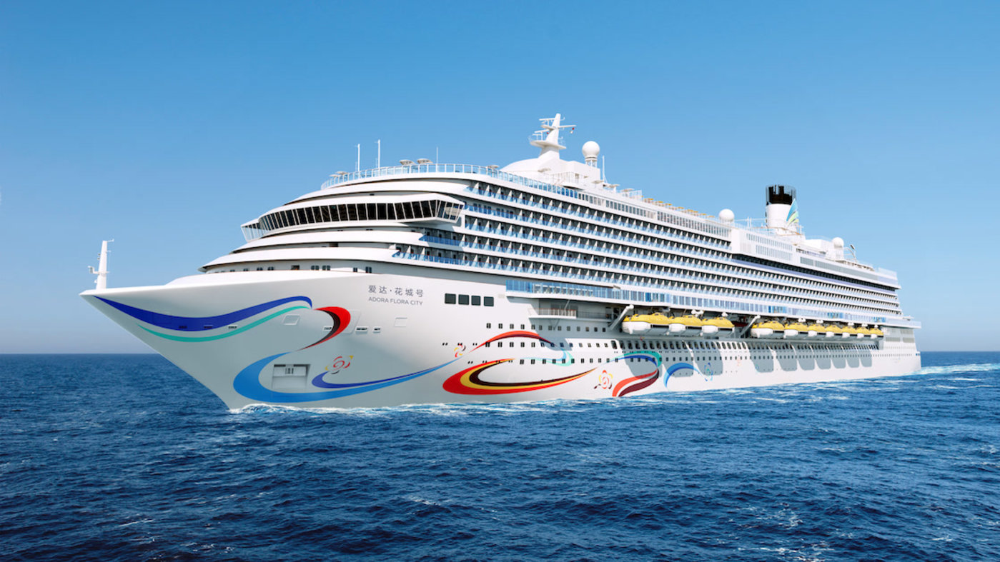
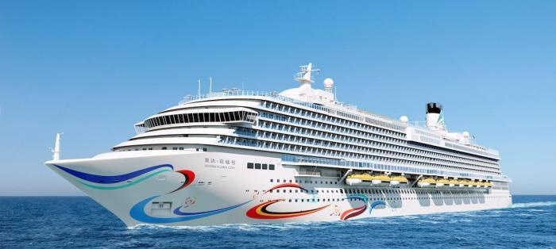

致 敬 各 位 领 导
诚邀登临国产大型邮轮
爱达 · 花城号
江南造船
百 年 江 南
致敬篇
各位领导：当您翻开这封请柬，我们由衷地想说——这盛世，如您所愿。
从1865年江南机器制造总局的第一声锤响，到今日长兴岛船坞里拔地而起的巨轮；从当年白手起家的"内装车间"，到如今精耕细作的"内装部"——一脉相承的，不只是技艺，更是一代代江南人薪火相传的报国初心。
您曾在最艰苦的年代里，以双手丈量船舶内装的每一寸空间；您曾在技术封锁的寒冬中，为一艘艘国产舰船披上温暖而精致的内装。正是您打下的坚实根基，才让我们今日得以骄傲地站在国产大型邮轮的甲板上，仰望同一片碧海蓝天。
今日之中国船舶，已从"跟跑者"蜕变为"并跑者"乃至"领跑者"。这一路的荣光，铭刻着您的汗水与智慧；这一路的跨越，续写着您的梦想与担当。我们诚挚邀请您回到曾经奋斗的地方，亲眼见证当年的梦想，已化作今日的巨轮。
荣耀篇
从江南制造局的第一艘蒸汽兵轮，到今日电磁弹射型航母福建舰；从第一门后膛钢炮，到万吨级导弹驱逐舰批量下饺子——江南造船，用一百六十一年回答了同一个命题：强国必须强军，军强才能国安。
2025年，福建舰圆满完成全部建造试验任务并交付海军，标志着人民海军正式进入三航母时代。同年，江南造船全年交付新船28艘，包括大型集装箱船、超大型乙烷运输船、LNG运输船和汽车运输船，在高端船舶领域持续领跑全球。
如今的江南造船长兴岛基地，已成为全球最大、最先进的造船基地之一。从中华神盾到万吨大驱，从远望号到福建舰——江南人始终铭记"为了反对帝国主义的侵略，我们一定要建立强大的海军"的嘱托。曾经器不如人的刺痛，已化作奋楫深蓝的底气。
"这颗镶嵌在长江口的明珠，不仅是一艘邮轮，
更是中国船舶工业自主创新的时代丰碑。"
诚邀

INVITATION
二〇二六年 九月
活动地点
上海外高桥造船厂
参观对象
国产大型邮轮「爱达·花城号」
活动内容
登船参观 · 内装工程观摩 · 座谈交流
我们诚挚邀请您回到曾经奋斗的地方
亲眼见证当年的梦想，已化作今日的巨轮
亲耳聆听当年的誓言，已谱写成时代的华章